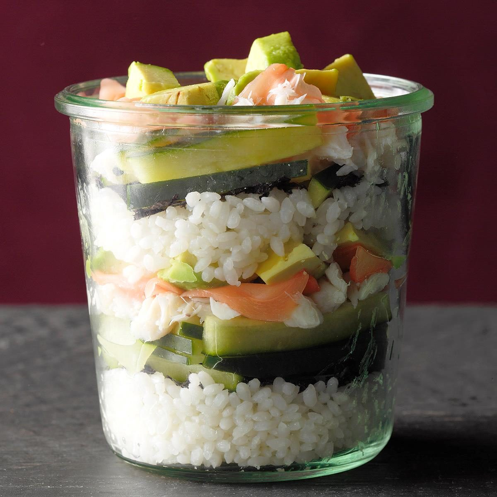

California Roll in a Jar

This Is For All The Big Sushi Fans
I'm a big sushi fan, but I don't always have time to make those intricate rolls at home.
This jar is layered with my favorite California roll ingredients, so I can get the flavor I love without the fuss.
Ingredients
- 1 cup uncooked sushi rice
- 1 cup water
- 1/2 teaspoon salt
- 1 tablespoon rice vinegar
- 1 tablespoon sugar
- 2 medium ripe avocados peeled and cubed
- 1 cup lump crabmeat, drained
- 1 cup chopped cucumber
- 2 nori sheets, thinly sliced
- Optional toppings: pickled ginger slices,
soy sauce and toasted sesame seeds
Directions
- Wash rice in a colander until water runs clear. Combine rice, 1 cup water and salt in a large saucepan; bring to a boil. Reduce heat; cover.
Simmer until water is absorbed and rice is tender, 15-20 minutes.
Remove from heat. Let stand 10 minutes. Combine rice vinegar and sugar, stirring until sugar is dissolved. Stir into rice.
- Place 1/3 cup rice into each of four 1-pint wide-mouth canning jars; layer with half of the avocados, crabmeat, cucumber and nori. Top with remaining rice and repeat layers.
Cover and refrigerate until serving. Transfer into bowls; toss to combine. Serve with toppings as desired.
Tips
- Imitation crabmeat is a very acceptable substitution for the more costly lump crabmeat. Tuna fish, smoked salmon or smoked trout are also good replacements for the crab.
- Have fun and add other ingredients you like, such as matchstick carrots or cubed cream cheese!
- To keep avocados green, toss in rice vinegar before layering.